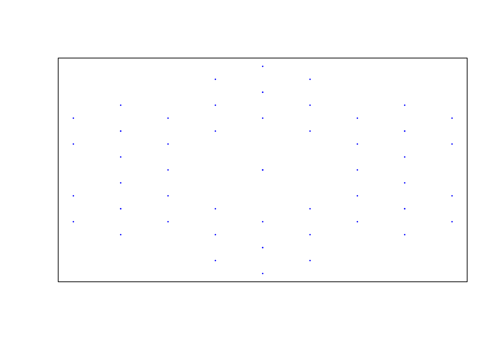
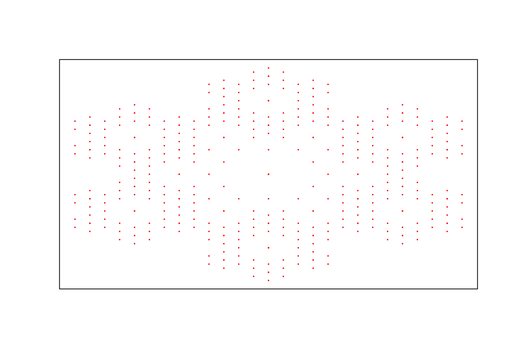
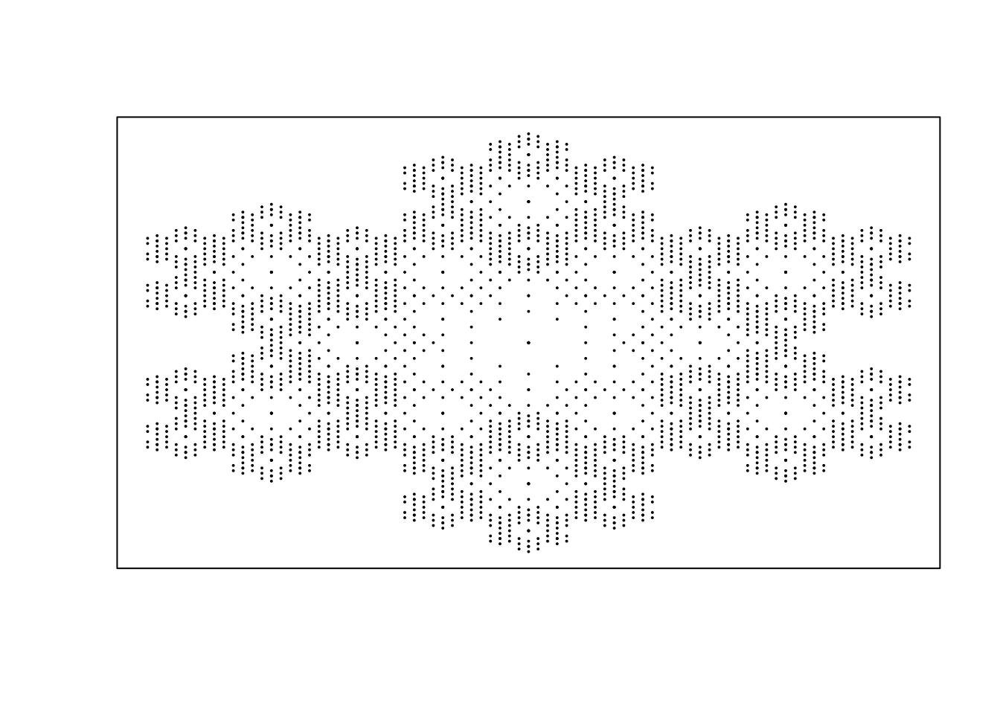
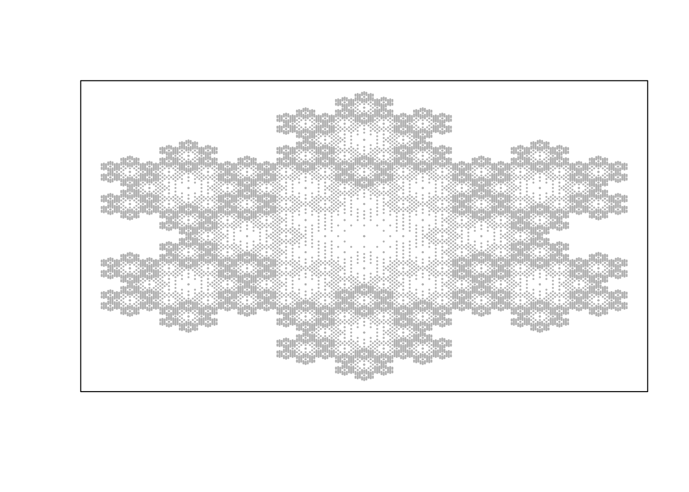

This package is designed to be easy way of generating fractals. We will go through couple simple steps to generate fractal for Koch’s snowflake.
First we need to create functions which will be used for fractal. In case of Koch’s snowflake this are the functions.
koch_f1 <- function(point) {
x<- point[1]
y<- point[2]
c(1/2 * x - sqrt(3)/6 * y, sqrt(3)/6 * x + 1/2 * y)
}
koch_f2 <- function(point) {
x<- point[1]
y<- point[2]
c(1/3 * x + 1/sqrt(3), 1/3 * y + 1/3)
}
koch_f3 <- function(point) {
x<- point[1]
y<- point[2]
c(1/3 * x, 1/3 * y + 2/3)
}
koch_f4 <- function(point) {
x<- point[1]
y<- point[2]
c(1/3 * x - 1/sqrt(3), 1/3 * y + 1/3)
}
koch_f5 <- function(point) {
x<- point[1]
y<- point[2]
c(1/3 * x - 1/sqrt(3), 1/3 * y - 1/3)
}
koch_f6 <- function(point) {
x<- point[1]
y<- point[2]
c(1/3 * x, 1/3 * y - 2/3)
}
koch_f7 <- function(point) {
x<- point[1]
y<- point[2]
c(1/3 * x + 1/sqrt(3), 1/3 * y - 1/3)
}When we have functions next step is to create IFS object we can do it calling createIFS function from IFSZuzanna package.
library(IFSZuzanna)
kochSnowflake <- createIFS(list(koch_f1, koch_f2, koch_f3, koch_f4, koch_f5, koch_f6, koch_f7))Once we have IFS object now last step is to plot it. We can choose depth of recursion and color in which we want to draw a fractal. Default color is black.
plot(kochSnowflake, 2, 'blue')
plot(kochSnowflake, 3, 'red')
plot(kochSnowflake, 4)
plot(kochSnowflake, 5, 'grey')